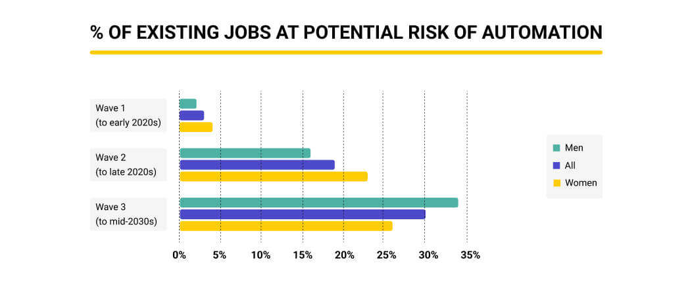

The use of AI is better in job fields.
The impact of Artificial Intelligence (AI) and automation on employment is a highly debated topic in today's world. The question of whether AI and automation will create more jobs than they eliminate does not have a straightforward answer; it involves various factors and perspectives. Here are arguments on both sides of the debate:
Arguments suggesting AI and automation will create more jobs:
- New Job Opportunities: AI technology creates new job opportunities in fields like machine learning, data analysis, AI ethics, and software development. These fields require skilled professionals to design, develop, and maintain AI systems.
- Increased Productivity: Automation can lead to increased productivity in various industries. Higher efficiency often leads to business growth, which can, in turn, create more jobs in different sectors of the economy.
- Job Transformation: While some jobs may be eliminated, others may transform. AI can automate repetitive tasks, allowing human workers to focus on tasks that require creativity, emotional intelligence, and problem-solving skills-areas where humans currently excel over machines.
- Entrepreneurship: AI tools and platforms enable entrepreneurs and small businesses to innovate and create new products and services, potentially leading to the formation of new companies and job opportunities.
- Support Industries: AI technology requires maintenance, troubleshooting, and updates, creating jobs in support industries. Additionally, there is a growing demand for AI-related education and training programs, leading to employment in the education sector.
According to PwC research, by the mid-2030s, one-third of all employment will be at risk of being automated. The workforce segment most likely to be affected will be individuals with a low level of education.
Anxiety about employment losses induced by greater use of machines has existed for centuries. With each breakthrough, someone's livelihood or quality of life was at risk of being irreversibly altered.
